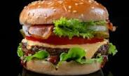

Classic Cheeseburger

Description
This classic cheeseburger is a simple, satisfying meal made with a juicy beef patty,
melted cheese, fresh vegetables, and a toasted bun. It is the kind of recipe that works
well for a quick lunch, a casual dinner, or a weekend cookout.
The burger comes together with basic ingredients and only a few cooking steps. With a good
sear on the patty and your favorite toppings, you can make a flavorful homemade burger that
tastes better than many takeout options.
Ingredients
- 1 hamburger bun
- 1/4 pound ground beef
- 1 slice cheddar cheese
- 2 slices tomato
- 2 lettuce leaves
- 2 pickle slices
- 1 tablespoon sliced onion
- 1 tablespoon ketchup
- 1 teaspoon mustard
- Salt and black pepper to taste
- 1 teaspoon butter or oil
Steps
- Season the ground beef with salt and black pepper, then shape it into a patty.
- Heat a skillet or grill over medium-high heat and lightly grease it with butter or oil.
- Cook the patty for about 3 to 4 minutes on the first side.
- Flip the patty, place the cheese on top, and cook for another 3 to 4 minutes.
- Toast the burger bun lightly on the skillet or grill until warm and slightly crisp.
- Spread ketchup and mustard on the bun, then layer lettuce, the cheeseburger patty, tomato, onion, and
pickles.
- Close the burger with the top bun and serve immediately.
Link to Home Page
Home